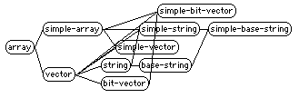
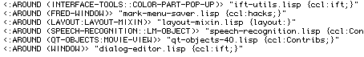

В Главе 10 мы узнали о двух функциях,
которые можно использовать для изучения объектов Lisp: DESCRIBE и
INSPECT. Они доступны в каждой реализации, так что вы должны
научиться как их использовать, даже просто на тот случай, если когда-нибудь
окажетесь за консолью перед новой и неизвестной системой Lisp.
Некоторые системы Lisp предлагают дополнительные инструменты, которые не являются частью ANSI Common Lisp. Иногда дополнительные инструменты встроены, а в других случаях они предоставляются поставщиком, но не устанавливаются по умолчанию. В этой главе я расскажу вам немного об этих инструментах, чтобы вы знали, что искать.
В дополнение к изучению структуры и взаимосвязей объектов иногда полезно
"hook in/подсоединиться" к поведению определенных функций. Возможно, вы
просто захотите узнать, когда- или вызывается ли- функция с определенными аргументами.
Трассировка(TRACE) всегда в вашем распоряжении (см.
Главу 16), но вы можете быть заинтересованы только
в одном конкретном вызове из тысяч; создание выходных данных трассировки (не говоря уже о том,
чтобы просеивать их позже) может занять очень много времени. В таких случаях некоторые
реализации Lisp позволяют advise(советовать новое поведение?) существующую функцию без изменения ее
исходного кода.
Когда вы программируете большую систему с помощью CLOS, особенно если
система развивается с течением времени, как это делают многие, вам
понадобится инструмент, который поможет вам изучить отношения между классами.
Некоторые системы Lisp предоставляют браузер, который отображает эти отношения
графически. Вот пример того, что браузер моей системы отображает подклассы
класса ARRAY:

Еще один полезный инструмент, браузер методов, позволяет изучить
все специализации конкретного метода. Браузер может позволить вам
фильтровать по определенным квалификаторам (мы узнали о квалификаторах в
Главе 14) и почти наверняка предоставит
вам навигационный доступ к определениям выбранных методов. Вот список из
браузера методов в моей системе Lisp; я запросил список всех методов
INITIALIZE-INSTANCE, имеющих квалификатор :AROUND:

Помните, что методы не принадлежат классам, поэтому у нас есть отдельные браузеры. (Некоторые браузеры дают вам возможность перемещаться по совпадающим связям между классами и методами, например, изучая классы, используемые для специализации аргументов к методу.)
Некоторые системы Lisp включают в себя возможность ADVISE.
Она позволяет перехватывать вызовы существующих функций. Вы можете предоставить код,
который проверяет (и, возможно, изменяет) Аргументы и результаты функции.
ADVISE имеет много применений, большинство из них придумано под
влиянием момента. Тем не менее, одним из распространенных способов использования
ADVISE является реализация TRACE или
BREAK , которые обусловлены конкретными аргументами
или результатами.
Синтаксис и параметры ADVISE варьируются от системы к системе.
Вот пример определения ADVISE в одной конкретной реализации:
(advise fibonacci
(when (zerop (first arglist)) (break))
:when :before
:name :break-on-zero)
В этом примере показано, как можно advise функцию FIBONACCI,
добавляя код, который вызывает(break) в отладчик, когда первый аргумент
FIBONACCI равен нулю. Обратите внимание, что нам не нужно
никаких знаний или доступа к исходному коду FIBONACCI,
чтобы добавить этот advise.
Эта конкретная реализация ADVISE связывает список
всех аргументов инспектируемой(advised) функции в переменную с
именем ARGLIST. Аргументы ключевые слова объявляют,
что форма advise (WHEN (ZEROP (FIRST ARGLIST)) (BREAK))
должна выполняться перед каждым вызовом FIBONACCI.
Advice имеет название :BREAK-ON-ZERO; это имя используется
при удалении advise (обычно через форму UNADVISE) или
при переопределении поведения конкретного advise.
Инструмент наблюдения(watch), который реже встречается в системах Lisp, позволяет отображать текущее состояние переменной во время выполнения программы. Детали сильно различаются. Реализация может дать вам выборочное отображение в реальном времени или замедлить работу программы, чтобы дать вам точное отображение каждого изменения. Иногда наблюдатель(watcher) интегрируется с отладчиком или степпером, а в других случаях он является независимым инструментом. Обратитесь к документации вашего поставщика, чтобы узнать, есть ли в вашей системе Lisp инструмент наблюдения(watch).